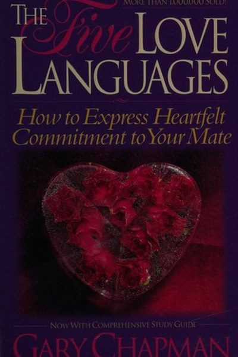

Library › Psychology & People
The 5 Love Languages — Summary & Key Lessons

The secret to love that lasts: speak the language your partner actually understands.
📖 OPEN THE FULL INTERACTIVE BREAKDOWN →🌐 Read it in Hindi, Hinglish, Gujarati, Tamil & 22 more languages — free, with audio.
💡 The Big Idea
People express and receive love in five distinct ways, and most relationship pain comes from a simple mismatch: you're expressing love in your language while your partner needs another. Chapman's method: discover your partner's primary love language, learn to speak it fluently, and watch the emotional tank refill. The book's promise: love is not just a feeling — it's a skill, and skills can be learned.
🧠 The 6 Key Lessons
Lesson 1: The Emotional Tank Is Real
The Model
Chapman's central metaphor: every person has an emotional love tank, and when it's full, they feel secure and can handle conflict; when it's empty, they act out in destructive ways. The lesson: maintaining the tank is not optional romance — it's the maintenance that makes everything else in the relationship possible.
📖 Example: Couples who fight over small things are often running on empty tanks — the fight is a symptom, not the problem. The practical edge: 'emotional tank is real' is not a one-time decision — it's a habit that compounds with every repetition, which is exactly why… Read the full example →
⚡ Do this: Ask yourself honestly: how full is my partner's emotional tank right now? What would fill it this week?
Lesson 2: Discover Your Partner's Primary Language
The Five
Chapman's five languages: words of affirmation, quality time, receiving gifts, acts of service, physical touch. Each person has a primary language — the one that fills their tank fastest. The mistake: giving love in YOUR language and assuming it registers. The method: observe what your partner most often asks for and complains about — those are the clues to their language.
📖 Example: A partner who constantly asks 'do you love me?' is likely speaking words of affirmation — while their partner may be serving them acts of service that never quite land. Here's the part that usually gets missed: 'discover your partner's primary language'… Read the full example →
⚡ Do this: For one week, note what your partner requests, complains about and lights up at. Identify their primary language from the pattern.
Lesson 3: Speak Their Language, Even If It's Not Yours
The Practice
The hard part: your partner's primary language is often the one you're worst at. Chapman's instruction is unglamorous and effective — learn it like a skill: schedule it, practise it, get feedback. Love is a choice expressed in a language the other person understands, not the one that comes naturally to you.
📖 Example: The husband who isn't naturally verbal learns to leave a sticky note of affirmation daily — because that's what fills his wife's tank, not the car he fixed. The real test of this lesson is a bad day: the principle that survives a crisis, a tight deadline and… Read the full example →
⚡ Do this: Choose one act in your partner's primary language and do it daily for two weeks. Ask them at the end if the tank feels fuller.
Lesson 4: Quality Time Means Undivided Attention
The Language
For quality-time people, love is presence — not proximity, but focused attention. Watching TV together doesn't count; a phone-free walk does. Chapman's advice: quality time is the hardest language in the distracted age, and the most needed. The 20-minute daily conversation with no screens is the prescription.
📖 Example: A couple can spend every evening in the same room and a quality-time partner still feels starved — because the attention was never theirs. In practice, 'quality time means undivided attention' shows up in tiny daily choices long before it shows up in… Read the full example →
⚡ Do this: Schedule 20 phone-free minutes daily with your partner this week. Just talk — or just sit together, present.
Lesson 5: Discover Your Own Language Too
The Mirror
Chapman's second half: know your own language, and communicate it instead of resenting its absence. You can't expect your partner to read your mind; asking clearly for what fills your tank is not neediness — it's the same skill as speaking theirs. The tank works both ways.
📖 Example: 'I need you to hug me when I come home' is not a demand; it's a map that lets your partner succeed at loving you. Most people nod at this principle and change nothing. The gap between agreeing and acting is where the whole game is won or lost. Read the full example →
⚡ Do this: Identify your own primary language and tell your partner one specific way to speak it this week.
Lesson 6: Love Languages Apply Beyond Romance
The Extension
Chapman's framework extends to children, parents, colleagues and friends — everyone has a tank and a language. The parent whose teenager speaks quality time but gets gifts, the employee whose manager only gives feedback (words) but needs acts of service — the same tool applies everywhere. The lesson: the five languages are a general skill of love.
📖 Example: A manager who learns that a key employee's language is words of affirmation and starts recognising them publicly transforms engagement. The uncomfortable truth about this lesson: it requires doing the boring version first — the unglamorous reps that nobody… Read the full example →
⚡ Do this: Pick one non-romantic relationship and identify their primary language. Speak it once this week.
✅ 5-Step Action Plan
- Rate your partner's emotional tank and plan to fill it.
- Identify their primary love language from requests and complaints.
- Practise one daily act in their language for two weeks.
- Schedule 20 phone-free minutes daily.
- Tell your partner your own language and how to speak it.
⚠️ When This Doesn't Work
Chapman's framework is practical — and it can become a checklist that substitutes for genuine attention: 'I did the act of service, why isn't she happy?' Love languages describe how love is received, not why love dies. Fouquet's party is the extreme: he performed the most spectacular act of 'love' (for the king) ever staged — and the recipient experienced it as threat, not gift. The caveat: the language matters, and so does the relationship behind it. A fluent love language spoken without real care is a better-executed lie. Technique serves connection; it doesn't replace it.
💀 The Graveyard Proves It
🏰 Nicolas Fouquet — The Party That Bought a Life Sentence. Burn: Freedom — died in prison. Read the full case study →
💬 Best Quotes from The 5 Love Languages
- “Love is something you do for someone else, not something you do for yourself.”
- “The emotional tank is like the fuel tank of a car: when it's full, the car runs well; when it's empty, it sputters and stops.”
- “People speak different love languages, and we must learn to speak the one our partner understands.”
Interactive version: mark lessons as read, listen in your language, share quote cards.